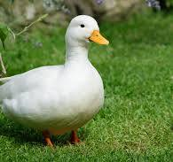
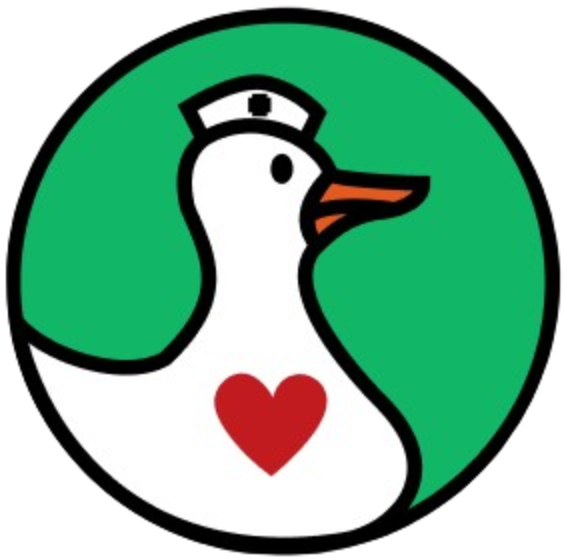

Sobre a Unipato
A proposta do nosso projeto surgiu a partir de uma necessidade real: melhorar a triagem e o diagnóstico de doenças cutâneas em patos, especialmente em ambientes de criação.
Desenvolvemos então um sistema que utiliza visão computacional para analisar imagens das aves e detectar possíveis sintomas visuais, como manchas, feridas, lesões ou alterações na textura da pele.
Esse sistema será uma ferramenta de apoio para profissionais da área, como veterinários e zootecnistas, oferecendo uma análise inicial rápida e confiável, baseada em inteligência artificial.
Com isso, buscamos otimizar o cuidado com os animais, evitar a propagação de doenças, diminuir custos com métodos tradicionais e trazer mais precisão para o processo de diagnóstico precoce.

Logo e paleta de cores:

A logo do software traz elementos gráficos inspirados em um pato estilizado com formas suaves, reforçando nossa conexão com o tema central e a leveza que queremos transmitir. A união entre a saúde animal e a inovação está presente nessa imagem.
A paleta de cores mescla vermelho e verde. O vermelho representa energia, ação e atenção à saúde, enquanto o verde remete ao ambiente natural, bem-estar e equilíbrio.